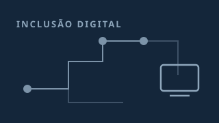
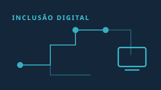

Vietnam.vn
Quang Ninh reduz a exclusão digital e expande o desenvolvimento em áreas de minorias étnicas.
Quang Ninh reduz a exclusão digital e expande o desenvolvimento em áreas de minorias étnicas. Vietnam.vn
Edição nº 110 · 13 de novembro de 2026 · 5 matérias
Vietnam.vn
Quang Ninh reduz a exclusão digital e expande o desenvolvimento em áreas de minorias étnicas. Vietnam.vn

Vietnam.vn
Reduzir a exclusão digital e ampliar as oportunidades de desenvolvimento para as comunidades de minorias étnicas. Vietnam.vn

Tribunal de Justiça do Estado de Goiás
TJGO inaugura Ponto de Inclusão Digital em Britânia, com foco em democratizar o acesso à Justiça na região Tribunal de Justiça do Estado de Goiás

Plantão Brasil
Programa de inclusão digital do governo federal poupa milhões de litros de água Plantão Brasil

Contadores.cnt.br
Letramento digital: por que é importante para empresários e gestores Contadores.cnt.br